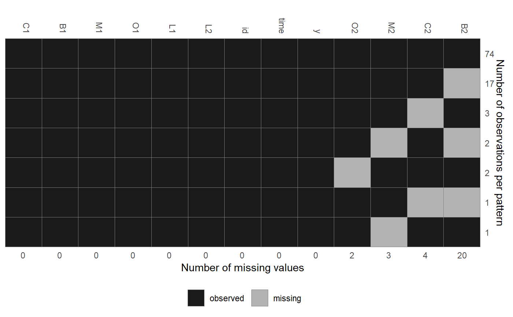
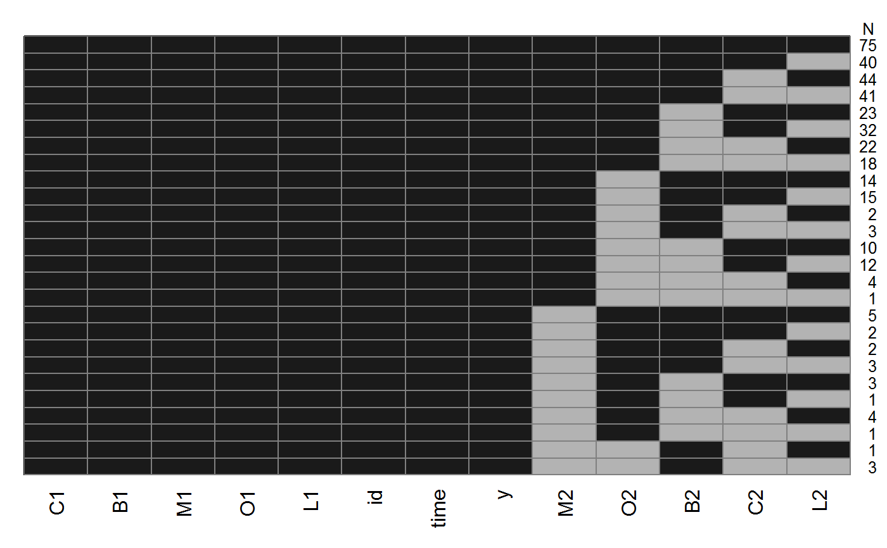

Plot the pattern of missing data. The missing data pattern is determined
using the function md.pattern from the
mice package.
md_pattern(data, plot = TRUE, xlab = "", ylab = "", xaxis_pars = list(), yaxis_pars = list(), printN = TRUE, print = TRUE, ...)
| data | data frame |
|---|---|
| plot | logical; should the missing data pattern be plotted? |
| xlab | label for the x-axis |
| ylab | label for the y-axis |
| xaxis_pars | list of optional parameters for the x-axis |
| yaxis_pars | list of optional parameters for the y-axis |
| printN | logical; should the title "N" of the y-axis be printed? |
should the missing data pattern be returned as a matrix? |
|
| ... | optional additional parameters passed to |
md_pattern(wideDF)#> C1 B1 M1 O1 L1 L2 id time y O2 M2 C2 B2 #> 74 1 1 1 1 1 1 1 1 1 1 1 1 1 0 #> 17 1 1 1 1 1 1 1 1 1 1 1 1 0 1 #> 3 1 1 1 1 1 1 1 1 1 1 1 0 1 1 #> 1 1 1 1 1 1 1 1 1 1 1 1 0 0 2 #> 1 1 1 1 1 1 1 1 1 1 1 0 1 1 1 #> 2 1 1 1 1 1 1 1 1 1 1 0 1 0 2 #> 2 1 1 1 1 1 1 1 1 1 0 1 1 1 1 #> 0 0 0 0 0 0 0 0 0 2 3 4 20 29par(mar = c(3, 1, 1.5, 1.5), mgp = c(2, 0.6, 0)) md_pattern(longDF, yaxis_pars = list(cex.axis = 0.8))#> C1 B1 M1 O1 L1 id time y M2 O2 B2 C2 L2 #> 75 1 1 1 1 1 1 1 1 1 1 1 1 1 0 #> 40 1 1 1 1 1 1 1 1 1 1 1 1 0 1 #> 44 1 1 1 1 1 1 1 1 1 1 1 0 1 1 #> 41 1 1 1 1 1 1 1 1 1 1 1 0 0 2 #> 23 1 1 1 1 1 1 1 1 1 1 0 1 1 1 #> 32 1 1 1 1 1 1 1 1 1 1 0 1 0 2 #> 22 1 1 1 1 1 1 1 1 1 1 0 0 1 2 #> 18 1 1 1 1 1 1 1 1 1 1 0 0 0 3 #> 14 1 1 1 1 1 1 1 1 1 0 1 1 1 1 #> 15 1 1 1 1 1 1 1 1 1 0 1 1 0 2 #> 2 1 1 1 1 1 1 1 1 1 0 1 0 1 2 #> 3 1 1 1 1 1 1 1 1 1 0 1 0 0 3 #> 10 1 1 1 1 1 1 1 1 1 0 0 1 1 2 #> 12 1 1 1 1 1 1 1 1 1 0 0 1 0 3 #> 4 1 1 1 1 1 1 1 1 1 0 0 0 1 3 #> 1 1 1 1 1 1 1 1 1 1 0 0 0 0 4 #> 5 1 1 1 1 1 1 1 1 0 1 1 1 1 1 #> 2 1 1 1 1 1 1 1 1 0 1 1 1 0 2 #> 2 1 1 1 1 1 1 1 1 0 1 1 0 1 2 #> 3 1 1 1 1 1 1 1 1 0 1 1 0 0 3 #> 3 1 1 1 1 1 1 1 1 0 1 0 1 1 2 #> 1 1 1 1 1 1 1 1 1 0 1 0 1 0 3 #> 4 1 1 1 1 1 1 1 1 0 1 0 0 1 3 #> 1 1 1 1 1 1 1 1 1 0 1 0 0 0 4 #> 1 1 1 1 1 1 1 1 1 0 0 1 0 1 3 #> 3 1 1 1 1 1 1 1 1 0 0 1 0 0 4 #> 0 0 0 0 0 0 0 0 25 65 131 149 172 542